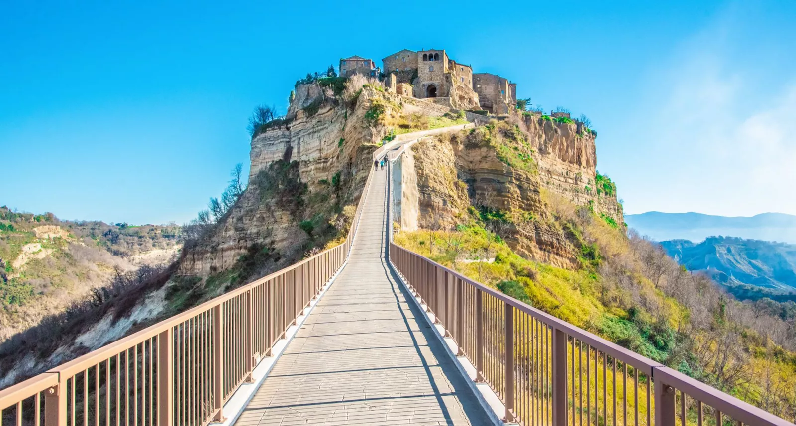

Diseño y Producción - Angie Herrera
Sígueme
Roma, la capital de Italia y un museo al aire libre único en el mundo, es suficiente para hacer del Lacio una de las regiones más bellas e interesantes. Incluso en términos paisajísticos, cuenta con una zona de gran impacto y notable variedad, con su largo litoral, sus hermosas colinas y sus Apeninos. Un destino del que enamorarse.
Puedes encontrar información sobre como desplazarte
aquí
Qué ver en Lacio: 4 paradas obligatorias
Además de las principales ciudades, Lacio ofrece muchas atracciones. La primera es Civita di Bagnoregio, un lugar encantador en la zona de Viterbo, llamada la ciudad moribunda por la precariedad de su estructura: se asienta sobre un afloramiento tobáceo en continua erosión.
La isla de Ponza es un destino glamuroso para los amantes del mar: es la principal de las islas Pontinas y cuenta con un mar cristalino, costas arenosas y cuevas fascinantes.
La inmersión en la naturaleza está garantizada en el lago de Bracciano, de origen volcánico y poblado desde el neolítico, con un paisaje de postal único gracias a sus bosques, caseríos, pueblos históricos y colinas.
Diseño y Producción - Angie Herrera
Sígueme